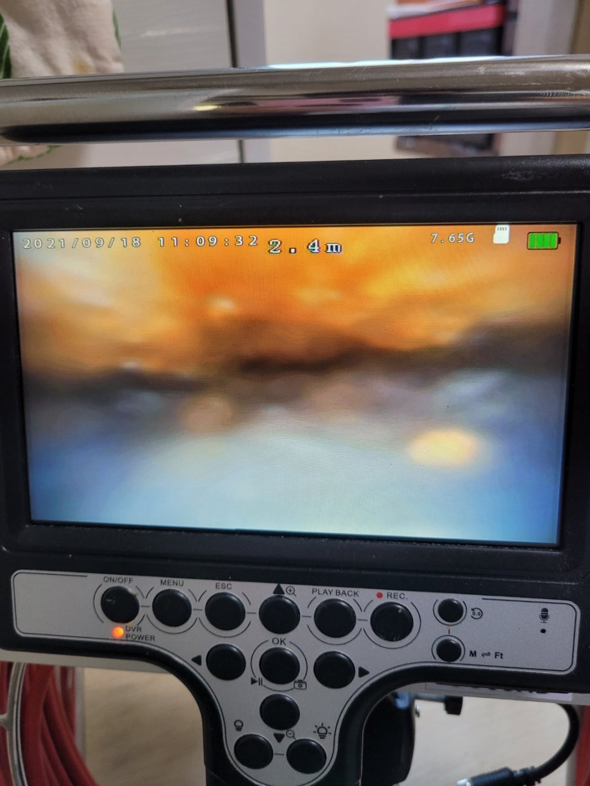
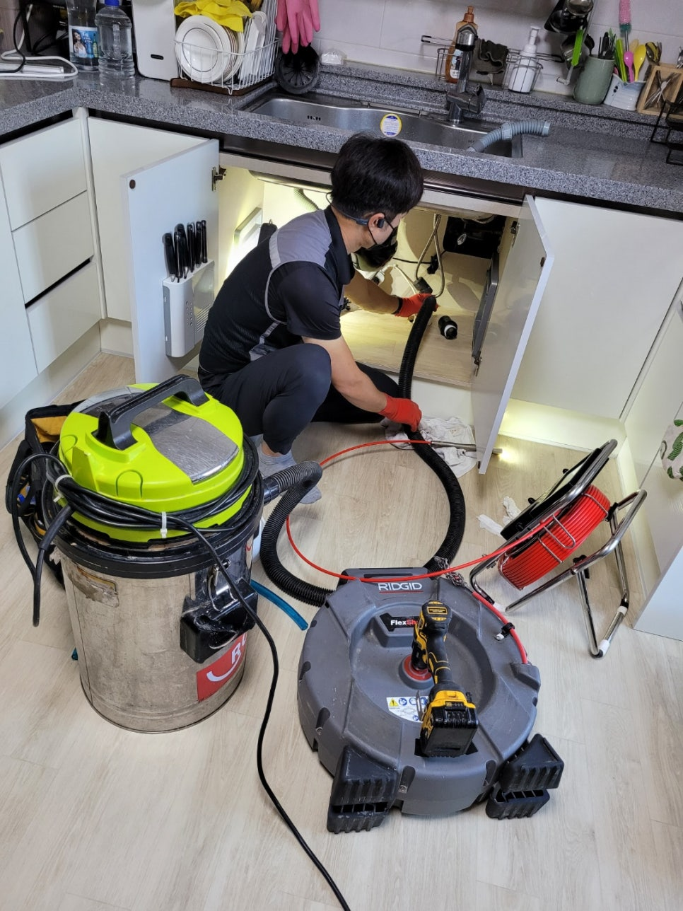
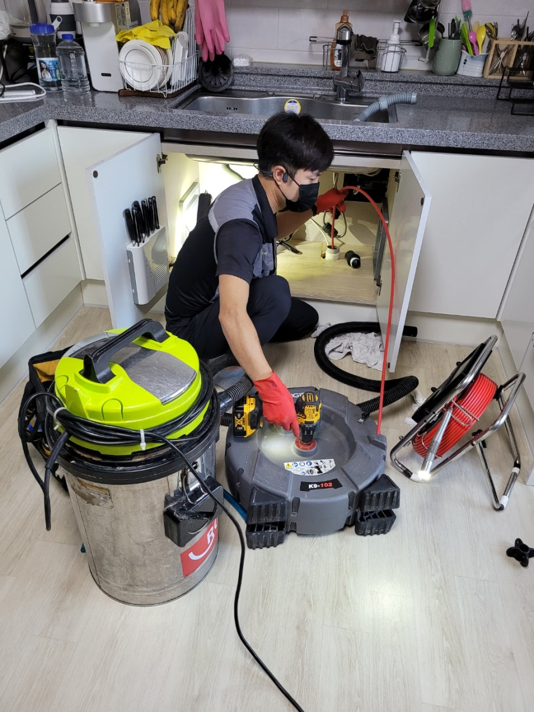
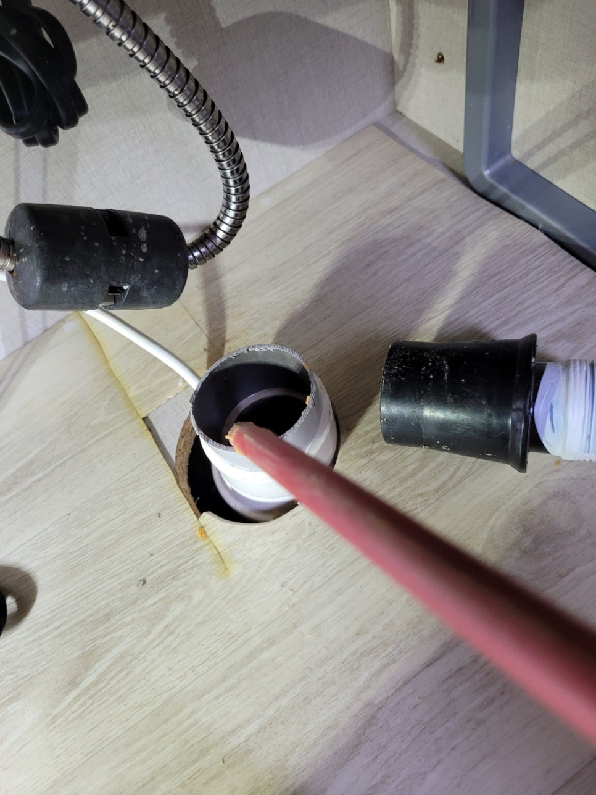
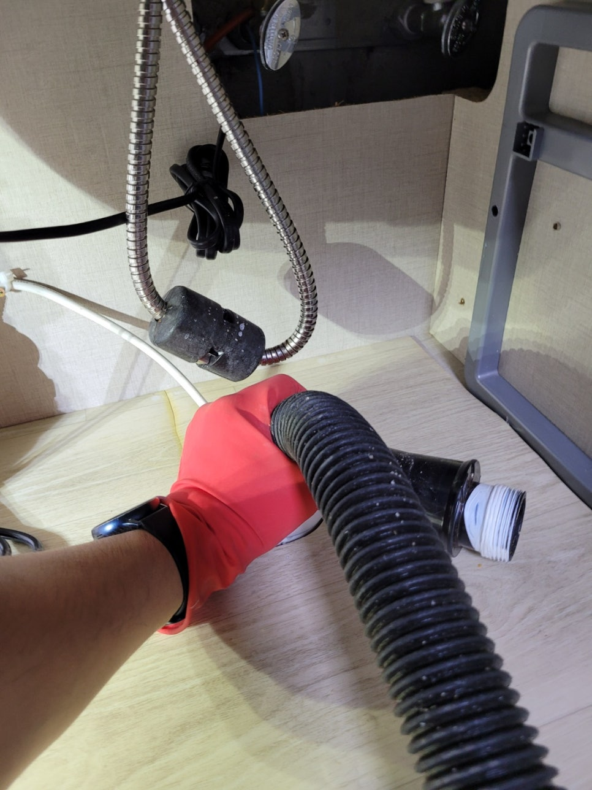
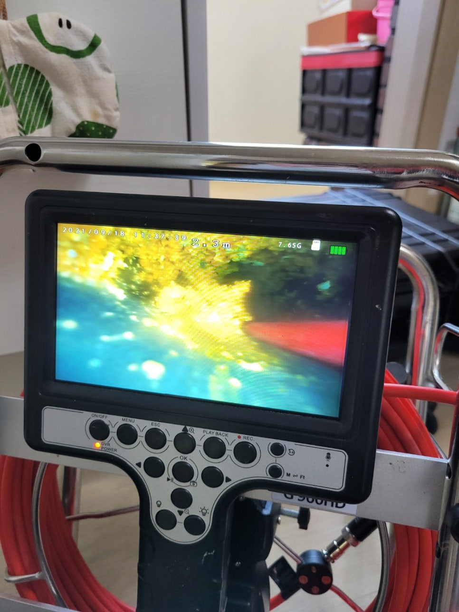

🏠 평택 비전동 용이동 송탄동 빌라 싱크대 하수구 막힘 뚫음
평택 비전동 싱크대막힘 전문 시공 후기

📋 작업 개요
- 위치: 평택 비전동, 비전동, 평택
- 서비스 유형: 싱크대막힘, 하수구막힘, 배관막힘, 뚫는업체, 배관청소, 고압세척, 설비공사
- 작업 일시: 2021. 9. 18. 23:49
- 업체명: 하수구수사대 (010-5615-2118)
🔍 문제 상황
평택 비전동 용이동 송탄동 빌라 싱크대 하수구 막힘 뚫음
안녕하세요
오늘은 평택에 비전동에 있는 주택3층에서
건물주인께서 연락을 주셔서 하수구수사대가
출동하였습니다.
오늘부터 추석연휴가 시작되어 음식을
준비하려면 싱크대 사용이 필수인데요!
현장을 방문하여 보니 물이 거의 내려가지 않는 상태였습니다.
2달전에 음식물처리기를 설치했는데 설치이전에도
배관이 자주막혀 동네설비 사장님들에게 뚫었는데
얼마가지 못하여 자주 막히는 상황이였어요.
다행히 음식물처리기 기사분께서 배관상태가 좋지않아
배관청소를 하시는게 좋고 내시경있는 업체를 선정하셔서
하시는걸 권장하셨는데 고객님께서 저희
하수구수사대를 선택해 주셨어요^^
우선 내시경으로 배관상태를 보고 어떻게 작업할지
고객님께 설명을 드리기도 했습니다.
내시경카메라를 넣자마자 기름덩어리들이 막고 있는게 보입니다
더이상 진입이 힘들겠네요 ㅜㅜ

🔎 원인 분석
💡 전문가 진단: 하수구수사대010-2340-2118
보통 싱크대배관은 50mm pvc 배관을 쓰는데
단독주택이나 오래된 구옥의 경우 65mm,75mm 배관을
쓰는 경우가 있는데 오늘 현장은 65mm 배관으로
50mm 배관보다는 크다보니 기름슬러지도 많이 차 있는 상태였습니다.
이곳은 3층짜리 주택이였는데 3층은 주인세대 한집만 있어서
싱크대,화장실바닥이 하나로 나가는 구조로 되어 있어요.
아파트나빌라는 보통 층마다 방과 화장실이 같은구조라서
싱크대배관과 화장실배관이 같이 되어있지만 단독주택과 다세대주택의
경우 보통은 하나의 배관으로 나가는 경우가 많답니다.
우선 배관에 있는 기름덩어리를 갈아내어 석션이라는 흡입장비로
큰 덩어리를 빼내는 작업을 진행했습니다.
갈아내고! 흡입하고! 갈아내고! 흡입하고!
장비를 뺄때마다 기름슬러지가 묻어나오기 때문에
휴지로 닦아내는 일은 덤으로 진행합니다^^
기름이 마치 체다치즈처럼 찐득찐득 체인에
가득 묻어있습니다. 덩어리를 흘려 내려보낼수도 있겠지만
혹시나 흘러나가다 덩어리들이 뭉쳐있으면
1층 하수구에서 막히면 저층세대에 피해가 가기 때문에
최대한 기름덩어리는 빼내는것이 좋아요.
배관이 65mm 배관이다보니 일반적은 싱크대 세척장비로는

🔧 작업 과정
더뎌 조금더 큰 장비로 바꿔진행 했습니다.
우선 구멍이 한결 넓어 졌기때문에 작업하기
좀더 수월해 졌어요^^
세척장비를 반복적으로 왕복하며 배관에
붙어있는 기름덩어리를 분쇄하고 있는작업 영상입니다.
음식물처리기를 사용하는 분들이 점점 늘어나고 있는 추세인데
되도록이면 배관점검을 받아보고 설치하는것도
좋은 방법인거 같아요.
기존에 쓰던 배관상태가 좋지 않거나 배관에 구배가
좋지않아 물이 고여있는 경우 기름슬러지가 많을수도
있고 앞으로 음식물처리기때문에
많아 질수도 있기 때문이에요.^^
석션통을 보니 기름이 너무많다보니 마치 카푸치노거품마냥
어마어마 합니다.
아무래도 다세대주택이고 3층을 독채로 쓰고 있다보니
싱크대와 욕실간격이 넓고 배관길이가 길다보니
구배가 좋지않아 물이 고여있는 구간이 길었어요.
그러다보니 기름덩어리도 많아 셕션으로 흡입하여
3번의 양을 빼내었습니다.
내시경을 보면서 중간중간 제거되지 않은 기름덩어리까지
깨끗하게 제거해야 합니다.^^
처음에 고객님께서는 뚫어도 뚫어도 자주막혀서
배관공사까지 생각하셨다니 스트레스 많이 받으셨다네요 ㅜㅜ
다행히 저희 하수구수사대에 작업을 맡겨주셔서
공사없이 최첨단장비로 단시간?에 해결해 드렸습니다.
배관이 새것처럼 깨끗하게 새척되어있습니다.
다만 아쉬운건 구배가 좋지않아 관리가 필요한데
관리요령은 음식물처리기 사용시 충분한 물과함께 음식물을
갈아내야하고 계란껍질,생선뼈,나물줄기같은 것들은
따로 버려 주셔야합니다.
그리고 한달에한번은 취침전 펑크린을 배관에 부어주게되면
물이 고여있는곳에 펑크린이 머무르면서 배관에


✅ 작업 완료
붙어었는 기름기들을 분해해 줍니다.
싱크대에 물을 틀어 잘 흘러나오는지 테스트는
필수!!
다행히 추석전에 해결하셔서 다행입니다^^
저희 하수구수사대는 평택이외에도
서울,경기,인천 전지역 출장가능합니다
하수구수사대
010-2340-2118




⚠️ 주방 싱크대 배관 막힘 예방 수칙
- ✅ 기름기가 묻은 식기나 프라이팬은 설거지 전 키친타올로 반드시 기름때를 닦아내세요.
- ✅ 주기적으로 싱크대 개수대에 뜨거운 물을 가득 받아 한 번에 내려 배관 내부 기름을 씻어내세요.
- ✅ 배수구 거름망을 미세한 필터로 사용하시고 음식물 찌꺼기가 틈으로 새어 들지 않게 관리하세요.
- ✅ 베이킹소다와 식초를 뜨거운 물과 함께 일주일에 한 번씩 부어주면 배관 살균과 막힘 예방에 좋습니다.
💡 핵심 정리
- 확실한 장비 작업(내시경 점검 및 샤프트 스케일링)으로 원인을 뿌리 뽑습니다.
- 작업 후 1년 이내에 동일한 부위 재발 시 100% 무상 A/S 서비스를 보장합니다.
- 서울 · 경기 · 인천 전 지역에 24시간 언제든 긴급 출동할 수 있도록 항시 대기 중입니다.
❓ 자주 묻는 질문 (FAQ)
🚨 평택 비전동 싱크대막힘 문제로 고민이신가요?
정확한 원인 진단과 확실한 시공으로 재발 없는 해결을 약속드립니다.
24시간 긴급 출동 | 서울 · 경기 · 인천 전지역 | 1년 내 재발 시 무상 A/S